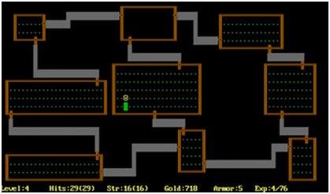
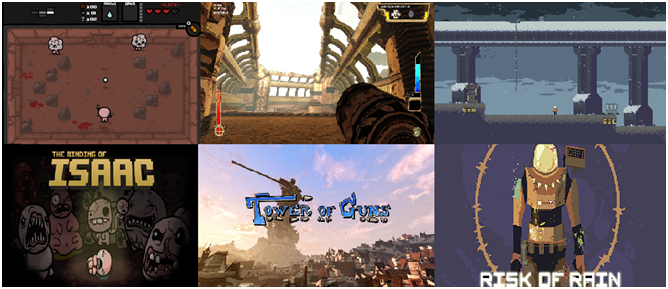

Le principe du jeu:
Mulligan est un RPG rogue-like teinté d’éléments de jeu de cartes dans lequel le joueur progresse à travers les étages d’un vaste donjon, dont la structure est représentée par des cartes. Il doit alors sortir victorieux des péripéties qui se dévoileront devant lui au fur et à mesure que les cartes se révéleront. L’aventurier, représenté par un pion, se déplacera alors de cartes en cartes à la recherche de l’escalier menant à l’étage suivant. Ce dernier sera cependant bien défendu par une bête monstrueuse que l’on combattra alors en vue à la première personne, équipé des cartes ‘équipement’ que l’on aurait obtenu le long de notre trajet et que l’on aurait alors dans notre main. Les péripéties proposeront au joueur différentes résolutions, ce dernier devra alors user de sa perspicacité pour comprendre de lui même quelle est la décision la plus avantageuse pour lui, et décider en fonction, à la manière d’un jeu de rôle papier. Au cours de ces péripéties, le joueur dépensera des ressources (ex : nourriture, or, moral..), en acquerra d’autres, dénichera de précieuxtrésors l’aidant dans ses combats et fera de surprenantes rencontres.. De plus, au fur et à mesure des parties, il apprendra à mieux connaître les différentes cartes du donjon et évitera les pièges dans lesquels il était tombé auparavant. La mort n’est pas un échec, mais une progression. A chaque partie les connaissances du joueur s’enrichissent et lui permettront d’aller plus loin à la partie suivante. De plus, tous les étages du donjon sont générés aléatoirement : le jeu est fait pour être joué à de nombreuses reprises.
Synopsis:
Au début de l’aventure, le joueur, un aventurier, entre dans une taverne pour se remettre de sa dernière escapade. Il y rencontre un voyant, qui lui propose alors de lire son avenir dans les cartes de tarot. Vous acceptez alors, en lui tendant une bourse d’or dérobée plus tôt dans la journée. Ce dernier disposera alors les cartes sur la table, qui formeront le premier étage du donjon, la partie peut alors commencer. . .
Qu'est ce qu'un Rogue Like?
Le genre « Rogue Like » désigne toute une série de titres sortis à la suite du jeu Rogue en 1980, et reprenant les bases de ce dernier comme concept fondateur : une longue descente aux enfers semée d'embûches dont le joueur ne pourra, de manière réaliste, pas triompher dès le premier essai, mais seulement au travers de multiples échecs ainsi que d'un apprentissage progressif des pièges et ennemis qui arpentent les lieux. Il est également commun aux Rogue Likes de générer les différents niveaux de manière procédurale et que ces derniers soient d'autant plus difficile que l'on approche le cœur du donjon.. Ces jeux ont tendance à avoir une difficulté relevée : la mort est monnaie courante, et lorsqu'elle survient, le personnage est immédiatement effacé. En découle un sentiment d'anxiété d'autant plus fort que les niveaux s’enchaînent, l'adrénaline monte alors que vous prenez part à un combat permanent pour votre survie, plus que pour votre victoire. De plus, les différents étages du lieu que l'on explore renferment souvent de nombreux secrets, ce qui ne rend leur exploration que plus passionnante.. Le genre Rogue Like n'est prévu que pour être joué en solo, à l'exception de certains titres récents (ex : Risk of Rain). Mais cela n'empêche en rien les compétiteurs de s'acharner sur le tableau des scores et les rôlistes de raconter leurs dernières péripéties sur quelques forums de passionnés..
Le fameux Rogue
La popularité du genre remonte à l'époque des jeux à jouer depuis la console . Ils proposaient en effet un gameplay assez riche pour ce que le support pouvait permettre. Depuis, les nouvelles techniques ont permis de nombreuses déclinaisons du genre : jeux de plateforme, FPS, RPG, jeux de gestion.. Tous sont passés sous les bannières de Rogue. La scène indépendante s'est de plus largement emparée du concept, très populaire auprès des amateurs.
Quelques Rogues Likes contemporains